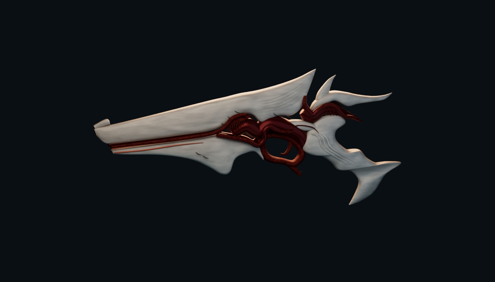

ROBLOX · 3D ASSET ARTIMAGINATION, EQUIPPED.
NOT YOUR
DEFAULT LOADOUT.
Weapons with attitude. Characters with soul.
A collection built to stand out in any world.
FEATURED DROP / 001
WHITE & RED CHIMERA++
WHITE & RED CHIMERA++

SCULPTED FORM / STRIKING SILHOUETTE09 PIECES / 11 RENDERSWEAPONS • PROPS • CHARACTERSSCROLL TO EXPLORE ↓
01 / THE COLLECTION
SELECTED WORK.09
From fantasy arsenals to avatar essentials.
Pick a piece. Take a closer look.
DETAIL STUDY / CHIMERABEAUTY.
BEAUTY.
WITH BITE.
Ivory surfaces meet deep crimson metal. Sweeping fins, layered contours, and an organic silhouette turn a familiar prop into something unexpected.
02 / THE CRAFT
SMALL DETAILS.
BIG PERSONALITY.
This collection explores the expressive side of Roblox asset art: graphic shapes, bold material contrast, and silhouettes that tell a story before a character ever picks them up.
01
Silhouette first.
From sweeping blades to oversized wings, every piece starts with a memorable shape.
02
Contrast with purpose.
Ivory and crimson. Gold and sapphire. A focused palette makes the details speak.
03
A world of range.
Fantasy weapons, playful character studies, and accessories with their own identity.